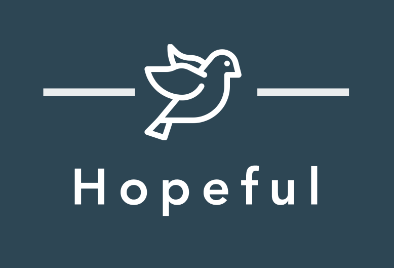

HOPEFUL

Project Overview A mobile app prototype as part of the final deliverable for UW DubHacks's Hack 20 Virtual Hackathon (Quarantine Track). Hopeful is a platform for users who have recently lost someone and are unable to attend the funeral due to COVID-19 social distancing measures. Using Figma, we built a low-fidelity and high-fidelity prototype. Additionally, we coded a lot of the prototype using the Angular Framework and Angular Material to make a functioning web application.
Team Members Elva Chen, Yunwei Liang, Timmy Pham, Jaimie Jin, and Sharon Lin